Музыка, кастомизация и тонкая настройка Telegram
SoundGram — модификация Telegram на базе мессенджера с функционалом CherryGram и AyuGram, созданная специально для меломанов и энтузиастов глубокой кастомизации интерфейса.

Что делает SoundGram особенным?
Переключайте разделы и исследуйте главные преимущества над официальным клиентом Telegram.
Полноэкранный плеер с караоке и 10-полосным эквалайзером
Превратите Telegram в продвинутый плеер студийного уровня. Слушайте музыку без ограничений, синхронизируйте тексты в такт трекам и настраивайте звук под любые наушники.
- ✓ 10-полосный эквалайзер, BassBoost и 3D объемный звук
- ✓ Караоке-тексты Synced Lyrics с плавной подсветкой строк
- ✓ Оффлайн-кэширование в одно касание и умная «Моя волна»
Анимированные видеообои и движок наборов иконок
Устанавливайте живые видеоролики из памяти на фон чатов до 24 FPS. Полная поддержка иконпаков от Nothing, exteragram, Liquid Glass, Solar и Plumpy для уникального стиля.
- ✓ Видеообои в диалогах с плавной энергоэффективной частотой до 24 FPS
- ✓ Движок иконок Nothing, exteragram, Solar и Liquid Glass
- ✓ iOS-стиль строки ввода, цветные ответы и настройка формы аватарок
Полная невидимость и сохранение удаленных сообщений
Все возможности AyuGram прямо в клиенте: читайте чаты без галочек, скрывайте статус «В сети», анонимно смотрите истории и сохраняйте удалённые собеседниками сообщения и медиа.
- ✓ Режим призрака: нечиталки, скрытие онлайна, тайпинга и Stories
- ✓ Анти-удаление: сохранение стёртых текстов, фото, видео и истории правок
- ✓ Аппаратная биометрическая защита чатов и экстренный PIN-код
Кружки 1080p 60 FPS и встроенный WebSocket Bypass
Записывайте видеосообщения в максимальном качестве на обе камеры одновременно с оптической стабилизацией. Обходите любые замедления Telegram через встроенный локальный WS-прокси 1443.
- ✓ CameraX: видеокружки 1080p, 60 кадров/сек, битрейт до 2200 kbps и OIS
- ✓ Одновременная запись на основную и селфи-камеру
- ✓ SoundGram Bypass: порт 1443, работает прямо на смартфоне без сторонних VPN
Живые видеообои в чатах
Оживите ваши диалоги любимыми аниме-сценами, клипами или видео из галереи телефона. Оптимизированный рендеринг работает плавно на частоте до 24 кадров в секунду, не перегружая процессор и сохраняя заряд батареи.
- Любые видеофайлы из галереи смартфона
- Плавная частота кадров до 24 FPS
- Мягкое затемнение для комфортного чтения сообщений

10-полосный EQ & Synced Lyrics
Полный контроль над звуковой картиной: регулируйте частоты на интерактивном графике, активируйте мощный BassBoost и комнатную реверберацию. А караоке-тексты песен скроллятся синхронно с битом трека прямо в плеере.
- Точный 10-полосный эквалайзер с пресетами (Rock, Pop, Flat, zxc...)
- Караоке Synced Lyrics с живой подсветкой строк
- Изменение скорости воспроизведения и тональности трека
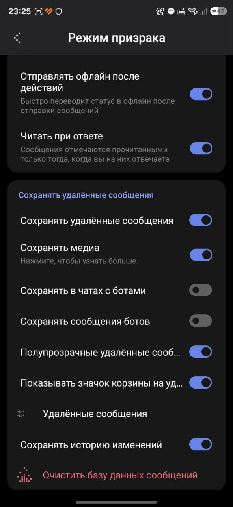
Анти-удаление и Режим призрака
Собеседники больше никогда не смогут скрыть от вас удалённое или исправленное сообщение. Все удалённые тексты и медиафайлы сохраняются в чатах со специальной пометкой, а режим призрака делает вас абсолютно незаметным.
- Сохранение удалённых сообщений, фото, видео и голосовых
- Полная история правок и редактирования сообщений
- Невидимый статус «В сети», скрытие тайпинга и анонимные Stories

CameraX 60 FPS & WebSocket Bypass
Используйте все возможности камеры вашего Android смартфона: видеокружки в честных 60 FPS с оптической стабилизацией и битрейтом до 2200 kbps. А встроенный WebSocket Bypass на порту 1443 спасает от любых замедлений провайдеров без сторонних VPN.
- Запись кружков в 1080p 60 FPS и одновременная запись на две камеры
- Локальный прокси 1443 без сторонних серверов и утечек данных
- Многопоточное ускорение скачивания треков и тяжелых файлов
Забудьте о примитивных кнопках в статус-баре
SoundGram превращает Telegram в настоящий Hi-Fi аудиоплеер с большими обложками, глубоким эквалайзером, оффлайн-кэшем и караоке.
Полноэкранный плеер и очередь
Красивый интерфейс с огромными обложками на весь экран, удобным управлением плейлистом и очередью, таймлайном с точностью до секунды и быстрым шерингом трека в любой чат.
Смотреть экран
Синхронизированные караоке-тексты
Встроенная поддержка Synced Lyrics. Строчки плавно подсвечиваются и скроллятся синхронно с ритмом трека — подпевайте любимым композициям вживую.
 Смотреть экран
Смотреть экран
10-полосный EQ & BassBoost
Интерактивный график АЧХ, глубокое усиление басов, 3D объёмный звук, изменение скорости (0.5x–2.0x) и тональности, комнатная реверберация и быстрые пресеты (Rock, Pop, Flat, zxc...).
Смотреть экран
Глобальный поиск и оффлайн-кэш
Умный поиск по всей музыкальной базе Telegram: треки, каверы, ремиксы и студийные альбомы. Сохраняйте треки в кэш одной кнопкой и слушайте даже без интернета в метро или в самолёте.
 Смотреть экран
Смотреть экран
Профили артистов и дискографии
Полноценные карточки исполнителей с фотографиями, популярными релизами, синглами, альбомами и возможностью мгновенно включить персональную «Мою волну» по исполнителю.
 Смотреть экран
Смотреть экран
«Моя волна» & Плейлисты
Создавайте и кастомизируйте собственные плейлисты с обложками. Интерактивная светящаяся сфера «Моя волна» изучает ваши вкусы и генерирует идеальный персональный поток.
 Смотреть экран
Смотреть экран
Тонкая настройка вкладки «Музыка»
В SoundGram доступна детальная статистика прослушиваний (количество прослушанных треков и часов), тонкая калибровка интенсивности лучей и размера 3D-сферы «Моя волна», а также эффекты стеклянного размытия (Glassmorphism) для карточек релизов.


Сделайте мессенджер по-настоящему своим
От живых анимированных видеообоев до формы курсора и движка иконок — в SoundGram кастомизируется абсолютно всё.
Анимированные видеообои до 24 FPS
Устанавливайте любые видеоролики из галереи, аниме-эпизоды или зацикленные клипы в качестве фона ваших чатов. Энергоэффективный рендеринг оптимизирован для плавности без лишнего расхода аккумулятора.
- Любые видео из памяти смартфона
- Плавная частота до 24 FPS
- Мягкое затемнение и регулировка контраста

Обои в списке диалогов & Iconpack Engine
Поставьте атмосферное изображение на фон всего списка чатов. Встроенный движок иконпаков позволяет менять все иконки приложения с поддержкой наборов от exteraGram, Nothing, Liquid Glass, Solar и Plumpy.
- Поддержка сторонних паков exteragram
- Наборы Nothing, Solar, Liquid Glass, Plumpy
- Настройка прозрачности и размытия Blur
Анимация набора и удаления текста
Эффекты размытия, скольжения, вращения и масштабирования при печати и стирании букв, а также плавный и жидкий курсор.
 Смотреть экран
Смотреть экран
Органайзер нижних вкладок и папок
Меняйте порядок разделов (Чаты, Музыка, Настройки, Профиль) драг-н-дропом, переносите вкладки папок вниз экрана и отключайте лишнее.
 Смотреть экран
Смотреть экран
Стиль сообщений и секунды во времени
Отображение времени с секундами (12:34:56), кастомные цвета в ответах и превью ссылок, эмодзи профиля на фоне цитирования.
 Смотреть экран
Смотреть экран
iOS-ввод, блики стекла и радиус аватарок
Раздельные блоки скрепки и текста как в iOS, эффект жидкого стекла, свечение медиа, и плавная настройка формы аватарок (от квадрата до круга).
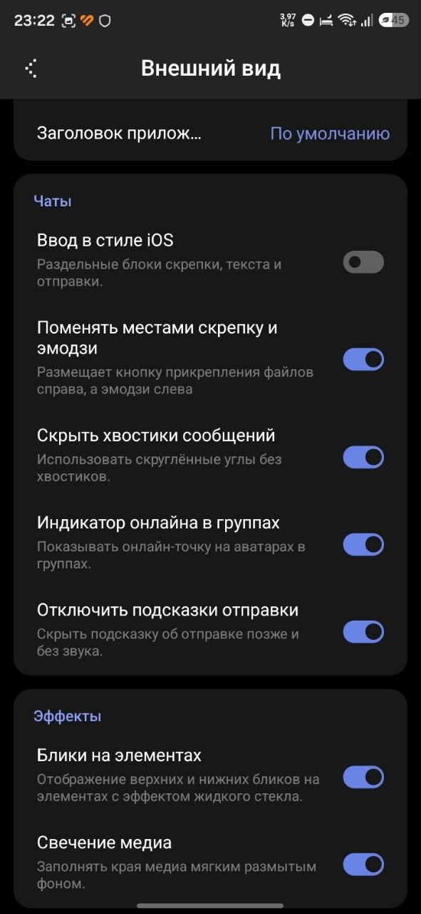
Смотреть экранЛучшее из AyuGram, CherryGram и DrKLO
Максимальная защита вашей приватности, сохранение истории переписок и полная невидимость в сети.
Полная скрытность онлайн
Оставайтесь невидимым для всех собеседников:
- Не читать сообщения — читайте переписку без появления галочек о прочтении
- Не отправлять онлайн-статус — статус «В сети» никогда не обновится
- Скрытие тайпинга — собеседники не видят «печатает...» или отправку файла
- Анонимные истории — смотрите Stories без отображения в списке зрителей
- Чтение при ответе — сообщение помечается прочитанным только если вы сами на него ответили
Сохранение удалёнок и правок
Больше никто не сможет скрыть от вас удалённое или отредактированное сообщение:
- Сохранение удалённых сообщений — текст остаётся в чате со значком корзины
- Сохранение удалённых медиа — фото, видео и голосовые не пропадают
- История изменений сообщений — просмотр всех версий отредактированного текста
- Сохранение в чатах с ботами — защита от автостирания логов ботами
- Локальная база данных — надёжное хранение на устройстве с возможностью очистки
Блокировка чатов и экстренный PIN
Надёжная аппаратная защита ваших личных переписок:
- Защита «Избранного» — биометрия или пароль перед открытием Saved Messages
- Защита секретных чатов и архива — скрытие и блокировка доступа
- Экстренный код доступа — специальный PIN-код на случай принудительной разблокировки
- Подтверждение удаления — защита от случайного стирания чатов
- Скрытие спонсоров прокси — очистка интерфейса от навязчивых каналов
Аппаратная мощь и обход блокировок
Снимайте кружки в 1080p 60 FPS на обе камеры одновременно и забудьте о замедлениях Telegram.
CameraX и видеокружки 60 FPS
Современный движок CameraX: запись видеосообщений (кружков) с повышенным качеством до 1080p, частотой 60 FPS и битрейтом до 2200 kbps. Оптическая стабилизация (OIS) и непрерывный автофокус.
Смотреть экран
Двойная камера и старт с ширика
Записывайте видеосообщения одновременно на две камеры (основная + селфи) с мгновенным переключением. Возможность автоматически начинать запись со сверхширокоугольного объектива.
 Смотреть экран
Смотреть экран
SoundGram Bypass (Порт 1443)
Встроенный WebSocket-прокси прямо на вашем смартфоне: туннелирует трафик Telegram под видом обычного веб-трафика на порт 443/1443. Работает без сторонних серверов и VPN, защищая от замедлений провайдеров.
 Смотреть экран
Смотреть экран
Многопоточная загрузка «Экстра» и параллельная отправка
SoundGram задействует дополнительные одновременные потоки к серверам Telegram для мгновенного скачивания музыки, тяжелых видеофайлов и отправки контента даже при нестабильном 3G/4G подключении.
Исследуйте все 31 экран клиента
Нажмите на любой скриншот, чтобы открыть его в полноэкранном режиме с описанием и удобным увеличением.
Полноэкранный плеер
Большая обложка, очередь и оффлайн-кэш
Караоке тексты
Синхронная прокрутка строк в такт
10-полосный EQ
BassBoost, пресеты, 3D звук и скорость
Библиотека
Плейлисты, треклисты и подборки
Моя волна
Умный поток музыки с фильтром жанров

Плейлисты
Создание и управление подборками

Альбомы
Удобный каталог студийных релизов
Глобальный поиск
Поиск по трекам, исполнителям и каверам
Профили исполнителей
Дискография и популярные синглы

Треклист альбома
Слушайте альбомы в оригинальном порядке
Визуал & Статистика
Часы музыки, размер сферы и блюр
Обои в списке чатов
Любые фото из памяти + Nothing иконки

Движок иконпаков
Solar, Liquid Glass, Nothing, exteragram
Анимация текста
Размытие, вращение и жидкий курсор
Нижние вкладки
Свободный порядок и включение иконок
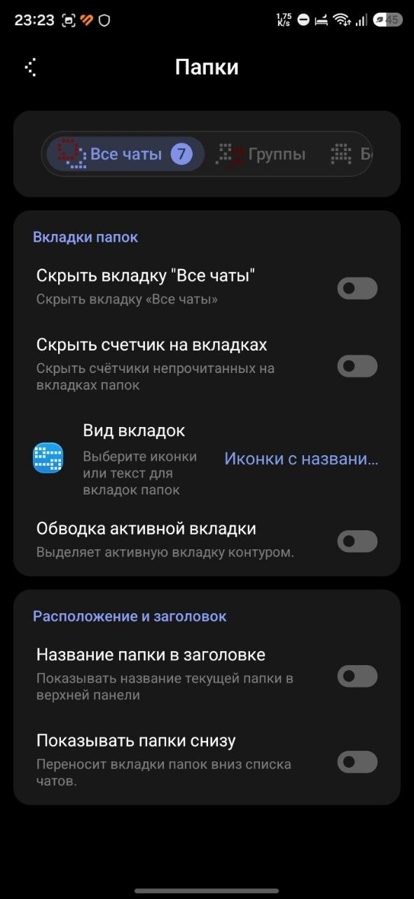
Папки чатов
Перенос папок вниз экрана и скрытие счетчиков
Стиль сообщений
Секунды в таймштампах и цветные ответы
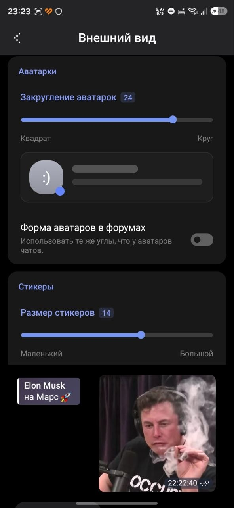
Форма аватарок
Скругление аватарок и масштаб стикеров
Стиль диалогов
iOS-ввод, блики жидкого стекла и свечение
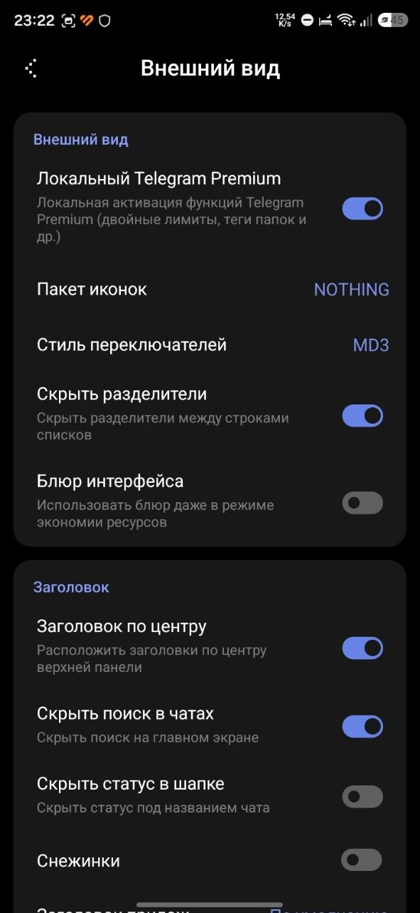
Локальный Premium
MD3 переключатели, размытие и центр шапки
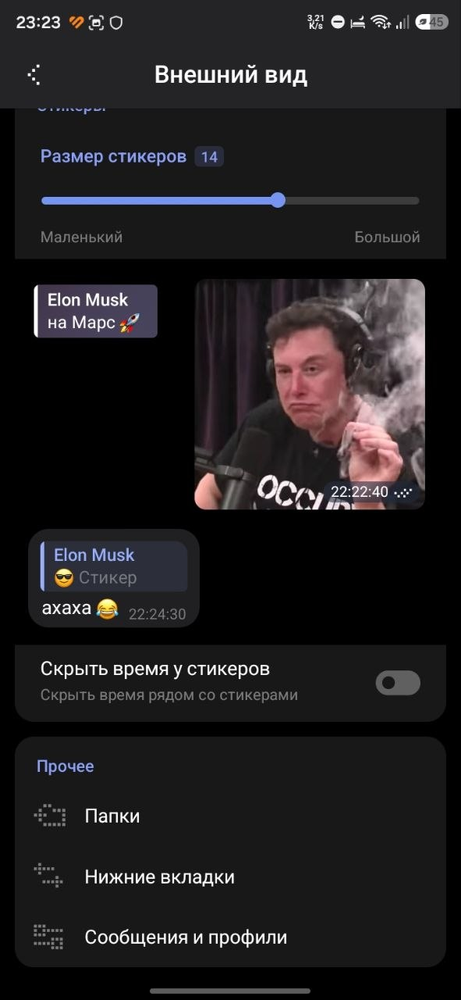
Стикеры & Разделы
Скрытие времени и быстрые переходы
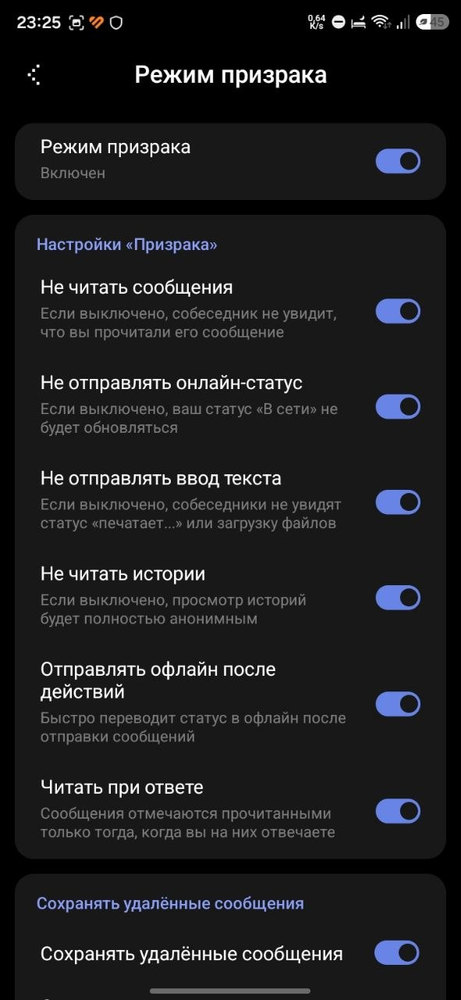
Режим призрака
Скрытие онлайна, историй и тайпинга
Анти-удаление AyuGram
Сохранение удалённых текстов, медиа и правок
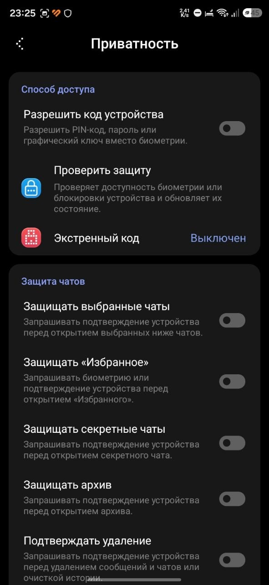
Биометрия & Экстренный код
Блокировка Избранного, чатов и архива
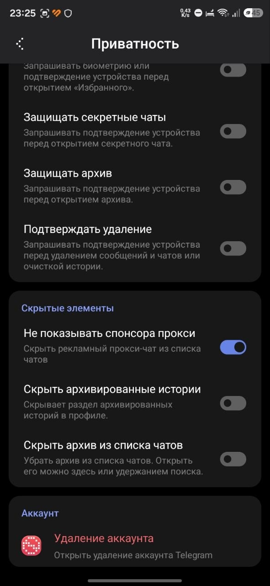
Скрытые элементы
Скрытие рекламы прокси и архивных историй
SoundGram Bypass
WS-прокси порт 1443 без внешних серверов
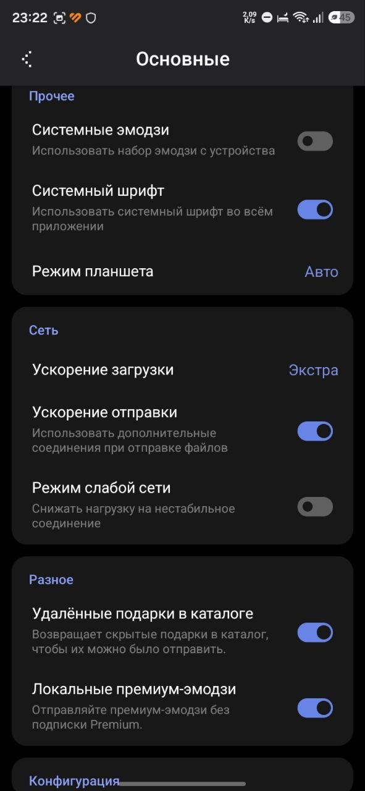
Ускорение Telegram
Многопоточная загрузка Экстра и отдача
Двойная камера CameraX
Кружки на обе камеры и старт с ширика
Кружки 1080p 60 FPS
Битрейт 2200 kbps и оптическая стабилизация

Хаб настроек
Удобный доступ ко всем возможностям клиента
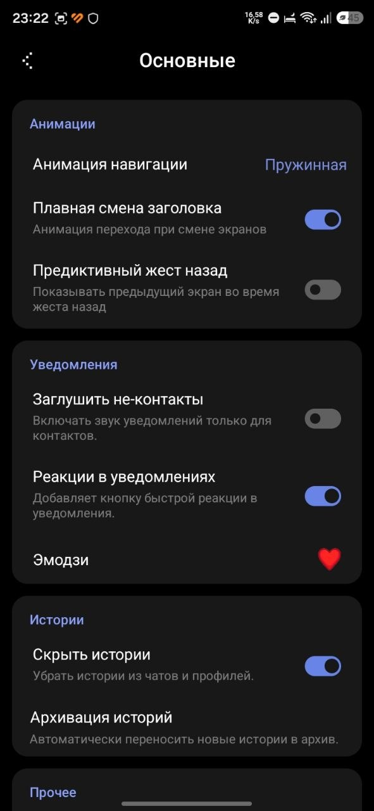
Пружинные анимации
Плавные переходы и предиктивный жест назад
Поддержите разработку SoundGram
Клиент развивается на чистом энтузиазме. Любая посильная поддержка помогает регулярно выпускать новые версии, оплачивать сервера и развивать функционал!
Банковская карта (МИР / СБП)
Прямой перевод без комиссий
Telegram Send / Wallet
Быстрая отправка через Telegram
Удобный и мгновенный способ перевода через официальный Telegram Send бот для пользователей со всего мира.
Поддержать в TelegramСтраница на Boosty
Разовый донат или ежемесячная подписка
Поддержите проект через платформу Boosty удобным способом с любой карты или электронного кошелька.
Перейти на BoostyСоздатели и контрибьюторы
Люди и открытые проекты, благодаря которым SoundGram дарит лучший опыт использования Telegram.
Sergey Vlasov
Lead Developer & Creator
Автор модификации SoundGram, интеграция музыкального плеера, эквалайзера и оптимизация сборки.
СвязатьсяCherryGram Core
Upstream Customization
Продвинутая кастомизация интерфейса, движок сторонних иконпаков и шрифты.
Канал CherryGramAyuGram Core
Privacy & Ghost Engine
Сохранение удаленных сообщений, медиафайлов, история изменений и режим призрака.
Канал AyuGramSoundGram Community
Melomans & Testers
Наши пользователи и тестеры, которые делятся идеями, находят баги и помогают проекту расти.
ПрисоединитьсяПрисоединяйтесь к семье SoundGram
Один универсальный файл для любых процессоров. Скачивайте прямо сейчас или подписывайтесь на канал.
Скачать APK
Через Telegram
Boosty Проект
Донат & Карты
SoundGram v12.10.5 (Release)
Универсальный APK-файл включает нативные библиотеки для всех современных процессоров (ARM64-v8a, ARMv7, x86_64).
Перед установкой убедитесь, что в настройках безопасности телефона включено разрешение на установку приложений из внешних источников.